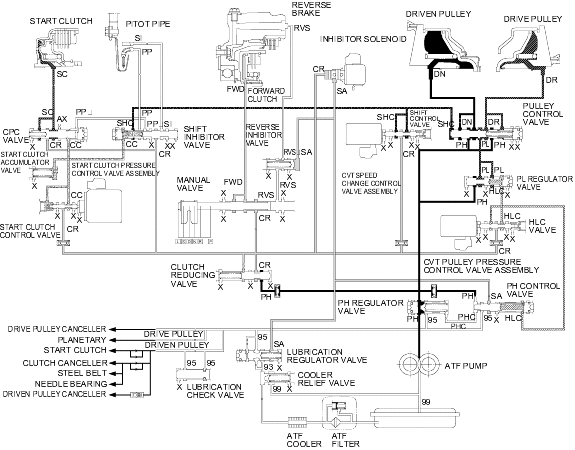

Position, at low speed range
Position, at low speed range
Honda Multi Matic Transmission/CVT
|
14-278 |
Hydraulic Flow (cont'd)
Position, at low speed range
The manual valve is shifted into position and uncovers the port leading forward clutch pressure (FWD) to the forward clutch. The forward clutch pressure (FWD) flows to the forward clutch, the forward clutch is engaged and drives the input shaft and drive pulley. The drive pulley receives low pressure and driven pulley receives high pressure. So, the pulley ratio is low at this time. The PCM actuates the start clutch pressure control valve assembly to control start clutch pressure. The start clutch control pressure (SC) from the start clutch pressure control valve assembly becomes the start clutch pressure (SC) at the CPC valve and flows to the start clutch. The start clutch is engaged and the vehicle moves.
